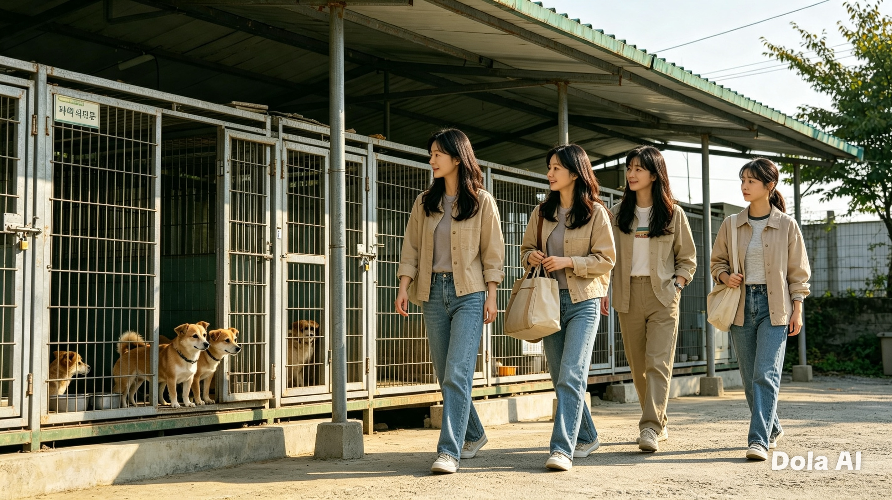
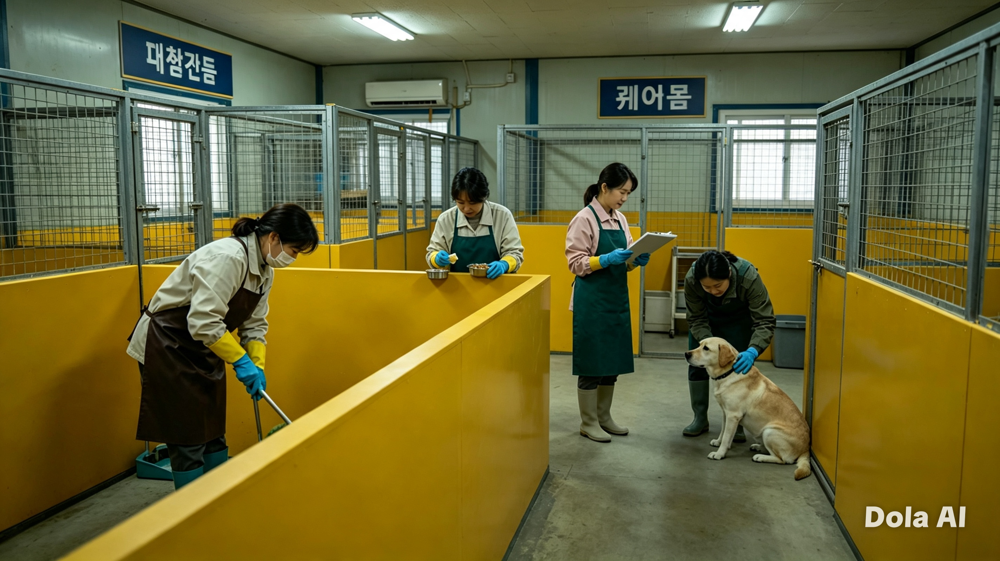
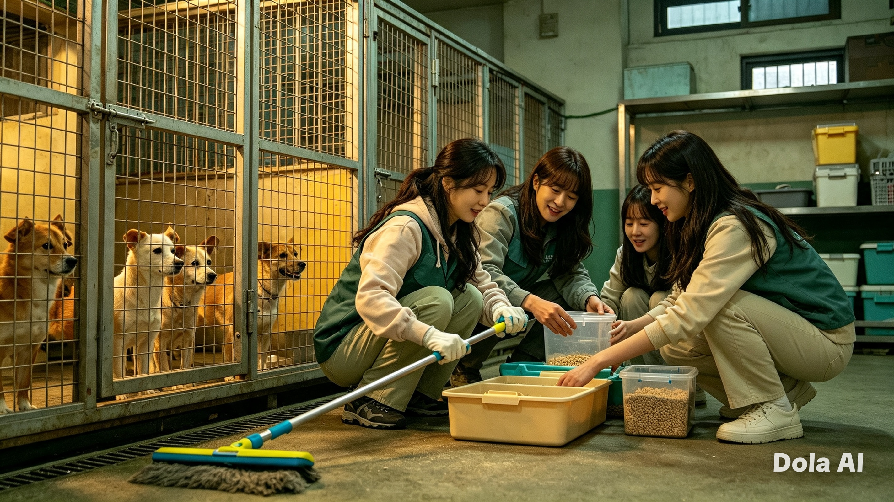
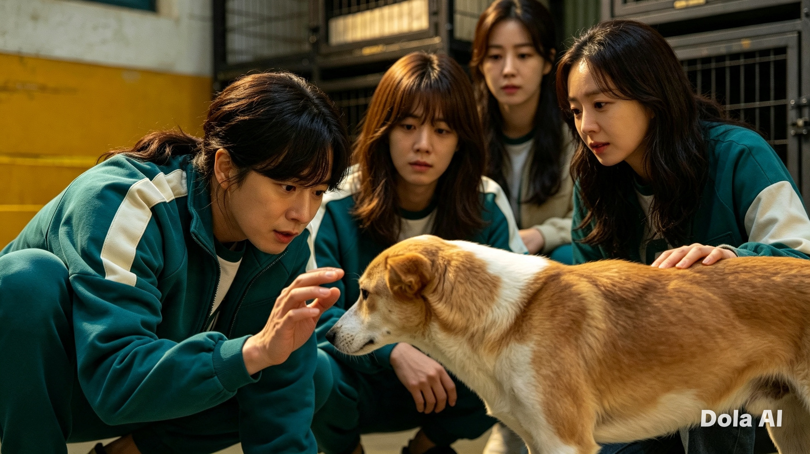
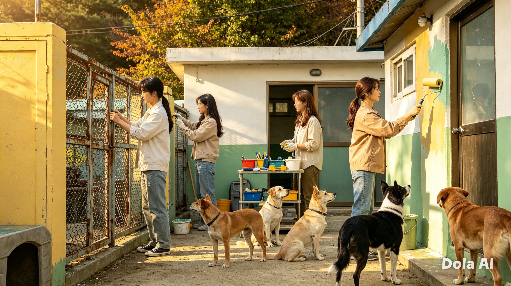
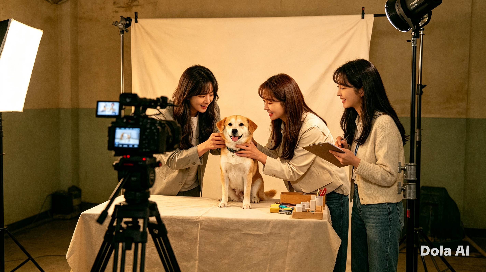
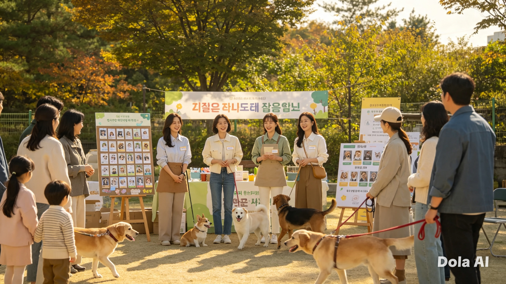
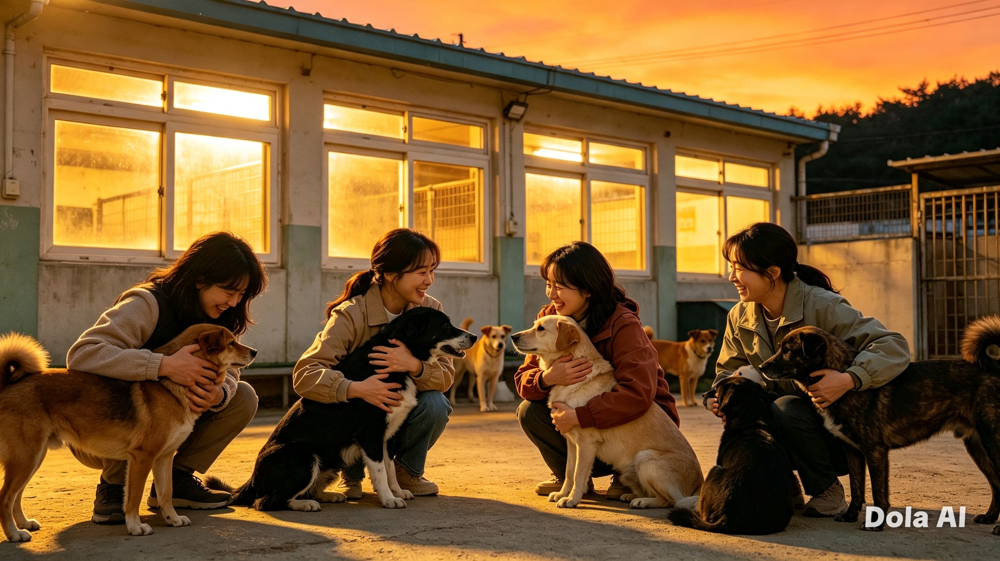

〈멍멍! 안녕!〉
유기견 보호소 10일 밀착 상주 관찰 예능
01. 기획 의도
유기견 콘텐츠는 넘쳐나지만, 유기견 보호소의 실제 하루 업무, 인력난, 그리고 현실적 어려움을 지속적으로 가까이서 들여다본 프로그램은 많지 않았습니다.
본 기획은 특정 유기견 몇 마리에만 조명이 쏠리는 한계를 넘어, 실제 유기견 보호소 내 모든 아이들을 골고루 보살피는 진짜 현장의 모습을 담아내고자 합니다. 베테랑 봉사자들과 비반려인 초보 일꾼이 보호소 인근 숙소에 머물며 배변을 치우고, 목욕을 시키며, 교감해 나가는 10일간의 리얼한 현장 생활을 통해 시청자들에게 자연스러운 공감과 진정성을 전달합니다.
02. 포맷 개요
| 항목 | 내용 |
|---|---|
| 장르 | 유기견 보호소 10일 밀착 상주 관찰 예능 (현장 봉사 + 숙소 공동생활) |
| 출연진 | 여성 연예인 봉사단 4인 (조윤희, 윤승아, 공승연, 이은지) |
| 기간/공간 | 10일 / 지정 유기견 보호소 및 인근 숙소 |
| 핵심 포맷 장치 | '전체 견사 순환 당번제' + '오늘의 원팀(One-Team) 케어' |
03. 핵심 포맷 장치 : 보호소 전체 케어 시스템
4인의 출연진 × 보호소 유기견 = 소외 없는 돌봄
특정 개체와의 1:1 매칭 대신, 4인의 출연진이 보호소 전체 유기견을 순환하며 케어하는 방식을 채택합니다.
- 구역별 순환 당번제: 대형견동, 소형견동, 정기 치료동 등 매일 구역을 바꿔가며 전체 아이들의 위생·배식·환경을 전원 케어합니다.
- 오늘의 원팀(One-Team) 케어: 손길이 급하거나(치료, 집중 사회화 등) 입양을 앞둔 아이를 매일 함께 선정하여 출연진 전체가 협력하여 보살핍니다.
- 전체 입양 프로필 제작: 특정 아이만이 아닌 보호소 내 모든 유기견들의 성격과 특징을 담은 입양 홍보 카드를 10일간 함께 완성합니다.
04. 출연진 캐스팅 라인업 (4인)
| 출연진 | 캐릭터/배경 | 프로그램 내 역할 |
|---|---|---|
| 조윤희 | 실무 에이스 / 섬세한 케어 | 장애견 및 사연 있는 유기견 구조·봉사 경력자. 약 챙기기, 특수 케어를 전담하는 핵심 일꾼 |
| 윤승아 | 센스 만점 케어 전문가 | 임시보호 및 유기견 기부 마켓을 이끌어온 행동파. 입양 홍보 및 물품 관리를 돕는 센스 담당 |
| 공승연 | 열정 가득 행동파 | 주기적으로 보호소 봉사를 다녀온 열정 멤버. 견사 청소, 시설 수리, 산책을 담당하는 에너자이저 |
| 이은지 | 초보 일꾼 / 분위기 메이커 | 반려동물을 키우지 않아 모든 게 낯선 비반려인 대표. 시청자 대입점 및 성장 서사와 현장 활력 담당 |
05. 입체적 서사 구조
3개의 주체가 10일 동안 동시에 변화하는 입체적 성장 구조를 구축합니다.
06. 10일간의 로드맵 & 비주얼 스토리보드

설렘과 긴장 속 보호소 첫 입소, 견사 아이들과의 낯선 첫만남 라이브.

배변 청소와 사료 배식 현장에 투입되어 허둥지둥 적응해가는 현장.

대형견동과 케어동을 교대로 순환하며 진행되는 밀착 환경 정비.

경계심 높은 유기견에게 다가가 마음을 여는 순간.

낡은 시설 보수 및 환경 개선

단장을 마친 아이들의 개별 특징과 견생샷을 담아내는 프로필 촬영.

예비 입양자와 함께하는 온·오프라인 입양 매칭 및 프로필 공개.

변화된 아이들과 보호소 현장을 배경으로 전달하는 진솔한 클로징.
07. 제작 및 현장운영 원칙
- 동물복지 최우선: 촬영 전 수의사·전문가 사전교육 필수 이수. 소음 및 카메라 인원 최소화로 동물 스트레스 방지.
- 객관적 보호소 검토: 법적·수의학적·동물복지 기준을 충족한 보호소를 우수 검토하여 안전하게 진행.
- 자연스러운 연출: 인위적인 입양 유도나 억지 감동을 배제하고, 현장에서 일어나는 실제 교감과 성장 과정을 담백하게 기록.